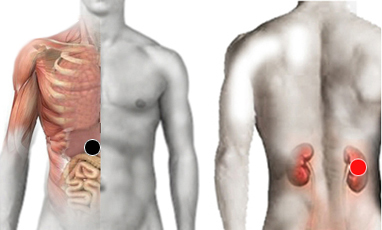

Adenovirus
Par
ligamento hepático - riñón (D)
hígado - suprarrenales
lumbar 3 - dorsal 3
suprarrenal - bulbo

Generalidades:
Virus (ADN) Provoca fiebre, distensión de abdomen, inflamación ganglionar y glandular. Inflamación de Adenoides y Ganglios. Falso VIH-Sida. Se confunde con catarro común.